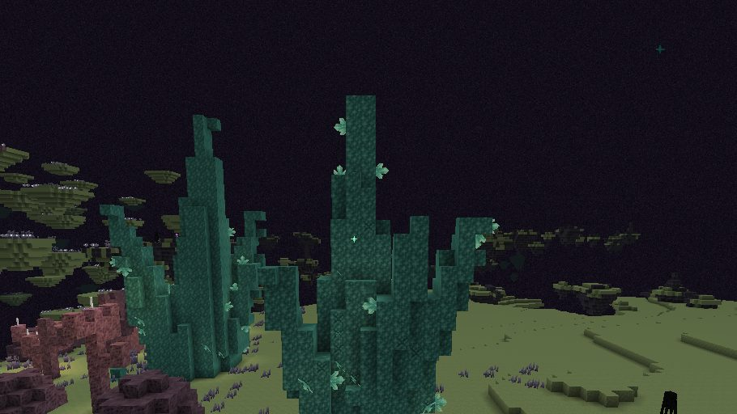

 The End That Was Promised
The End That Was Promised
Step through the portal into a living End, not a boss room: thirteen new biomes, the Ancients' ruins and constructs, three guardians' seals, and the dragon at the end.
Modpack makers: use the CurseForge download. GitHub Releases is for manual installs and testing.
The journey, in five acts
The Promise Codex, which every traveller arrives with, keeps the goals of each act and opens the next.
- The Arrival.
An End portal no longer drops you by the dragon. It sets you down in the outer End, 1,100 to 2,500 blocks out in the portal's direction, at an Ancient Waystation with a Return Gate home. Take Voidstone, make a Void Anchor, and cross the void on a Drift Islet.
- Reach the outer End
- Take the deep stone
- Make an anchor
- Fall, and be caught
- The Outer End.
Opens once you hold a Void Anchor. Roam the outer lands, wake the Rift Gates, trade at the Void Shrines, and follow the Star Chart you arrived with to the Shulker Foundry and its guardian, the Hollow Sentinel.
- Read a tablet
- Travel by Rift Gate
- Take a shrine's boon
- See the seven shores
- Find the Foundry
- The Void.
Opens when the Hollow Sentinel falls. Its chart leads to a Rift Maw over the void, where the Void Leviathan rises to strike.
- Find an Observatory
- Take every boon
- Read twelve tablets
- Find the Rift Maw
- The Edge.
Opens when the Leviathan falls. Smith Voidsteel, give your elytra more, catch a falling star, and travel out past 7,400 blocks to the Unfinished Citadel, where the Architect keeps the last seal behind its Amber Gate.
- Wear the Void
- Give your wings more
- Catch a falling star
- Forge the Amber Key
- Reach the Edge
How it plays has every rule and number.
Screenshots


Requirements
- Minecraft 26.3, Java 25.
- NeoForge 26.3.0.97 or later, and GeckoLib 5.5.7 (5.5.x).
- Fabric: Fabric Loader 0.20.1 or later, Fabric API 0.165.0+26.3 or later, and GeckoLib 5.5.7 (5.5.x).
- Install it on the client, and on the server too when you play on one.
- The new lands generate in End chunks made after it is installed. An End already explored keeps what it has.